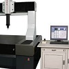
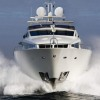
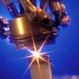

|
|
| Rapor - Makale
> 3D Tarama - Tersine Mühendislik: |
Koordinat ölçüm cihazlarýna (CMM) yapýlan retrofit (modernizasyon) uygulamalarý:
Ýlker Teke, AAT Otomasyon Yazýlým Ltd. Þti., Ekim 2009, Ýstanbul
Geliþen teknolojiyle birlikte gerek elektronik kontrol sistemlerinin maliyetinin düþmesi, gerek yazýlýmlarýn sürekli geliþtirilmesi, "kamera ve lazer kafa" gibi donanýmlarýn maliyetinin düþmesi, CMM modernizasyonunu kolaylaþtýrmaktadýr... |
 |
Tomografi yardýmýyla parçanýn 3D CAD modelinin oluþturulmasý:
Ünal Uslu,
Ekim 2008, Ýstanbul
Bu çalýþmada; karmaþýk iç ve dýþ yapýya sahip parçalarýn, CT cihazýnda taranarak, 3D modelinin ortaya çýkarýlmasý böylece konvansiyonel ölçme cihazlarýyla yapýlamayan boyutsal ölçümün ne kadar yüksek bir doðrulukla elde edilebileceði araþtýrýlmýþtýr... |
|
RIVAGE konsept otomobil tasarým ve geliþtirme aþamalarý:
Bu çalýþmada amaç, Porsche Carrera 911 modeli klasik otomobil için yeni bir kabuk tasarlanýp imal edilmesidir. Modern 3D tarama ve CAD/CAM araçlarýnýn yerinde kullanýmý ve yardýmý sayesinde, yeni tasarýmýn eski iskelet ile hatasýz þekilde uyumlu olabilmesi saðlanmýþ ve tüm proje, sadece 7 ay gibi kýsa bir sürede bitirilebilmiþtir... |
 |
NUMARINE'de ürün geliþtirme çalýþmalarý:
Röportajlar: Muzaffer Erdal Kýlýç, Genel Md., Numarine A.Þ. - Can Yalman, Endüstriyel Tasarýmcý, Can Yalman Tasarým
Numarine, önemli oranda yerli katký ve kaynaklarla, yeni teknolojiler geliþtirip kullanarak Dünya çapýnda rekabetçi birçok model yat geliþtiriyor ve imal ediyor... |
 |
Standard Profil A.Þ.'de kullanýlan ürün geliþtirme teknolojileri:
(Röportaj: Müfit Çaðlayan, Ürün Geliþtirme Md. - Okan Kýzýl , Ürün Geliþtirme Md. Yard. - Dr. Tuncay Yüksel, FEA Uygulama Sorumlusu)
Standard Profil A.Þ., General Motors, Ford, Volkswagen, Audi ve Fiat gibi firmalar için sýzdýrmazlýk fitili tasarýmý, geliþtirmesiyle birlikte seri imalatýný da üstlenmektedir... |
|
ASKAM Fargo Hi-Ex kamyon modeli için ürün geliþtirme çalýþmalarý (Röportaj: Erdinç Karaüç, Karoseri Aksamý ve Ar-Ge Müdürü):
ASKAM tarafýndan önemli oranda yerli tasarým ve mühendislik katkýsýyla üretilerek ilk olarak 2004 Aðustos ayý sonunda düzenlenen Ýzmir Enternasyonal Fuarý'nda tanýtýlan "Fargo Hi-Ex", yüksek konfor, geniþ kabin ve ekonomik fiyatý ile büyük ilgi gördü... |
 |
ISUZU Turkuaz otobüs gösterge panelinin tersine mühendislik ile yeniden tasarýmý:
Gürhan Paþolar, Makine Müh., Avitaþ Kompozit Plastik A.Þ., Þubat 2006, Ýstanbul
Torpido Gösterge Paneli, tasarýmýn ana sanayi tarafýndan tamamlanmasýnýn ardýndan üretim aþamasýnda katýldýðýmýz bir projedir... Parçanýn tamamlayýcý olan hassas geometrisinin tam ve doðru olarak oluþturulabilmesi için parçanýn araç üzerinde konumlanacaðý bölgenin 3 boyutlu yüzey modeline ihtiyaç vardý...
|
|
Dies/Molds 2007 Konferansý'nda sunulmuþ bazý makaleler:
21-24 Haziran 2007 tarihlerinde Çeþme'de düzenlenen, 4th International Conference and Exhibition on Design and Production of Machines and Dies/Molds veya Türkçe adýyla 4. Uluslararasý Makina ve Kalýp/Model Tasarým ve Ýmalat Kongresi ve Sergisi'nde yapýlan sunumlara ait bazý makaleler (Ýngilizce, pdf formatýnda)... |
|
3D
Optik Taramanýn Temel Prensibi; Optik Üçgenleme (Optical
Triangulation):
Ahmet Çakýr, Uzay Mühendisi, Defne Mühendislik Ltd.
Þti., Eylül 2005
3 boyutlu topogrametrik ölçüm 3'ncü boyutta görüntü iþlemede
fotogrametri ve stereometri kadar iyi bir yöntemdir. Tüm
teknikler optik üçgenleme (optical triangulation) prensibini
temel alýr. Kelime anlamý belli sayýda noktanýn konumunu
kesin olarak tespit edebilmek için... |
 |
Tersine
mühendislik:
Doç. Dr. Türkay Dereli, Doç. Dr. Adil Baykasoðlu
Gaziantep Üniv., Endüstri Müh. Böl., Nisan 2005
Günümüz
global rekabet ortamý, üreticilerin ürünlerini tüketicilere
daha kaliteli, daha ucuz ve daha çabuk ulaþtýrmasýný
bir zorunluluk haline getirmiþtir. Bu makalede, kýsaca bir
tanýmý verildikten sonra, tesine mühendislikte kullanýlan
yöntem ve teknikler... |
|
Otomotiv
endüstrisinde tersine mühendislik uygulamalarý:
Ping Fu, RE in Auto Industry, Time Compression Technologies
- Europe, Mart/Nisan 2004
Tercüme: Emre Bingöl, End. ürün. tasarýmcýsý, Cadem
A.Þ.
Pazardaki
farklý ürüne karþý duyulan talep otomobil üreticileri
için tersine mühendisliði (RE, Reverse Engineering)
montaj hattýnýn kitlesel üretime yaptýðý etki kadar
önemli bir hale getiriyor... |
|
Türbin
kanatlarýnýn bakým ve onarým teknolojisinde yeni eðilimler:
Oðuzhan
Yýlmaz,
Nabil Gindy, Tolga Bozdana, Mart 2004
School of 4M, Manufacturing Engineering, The University
of Nottingham, Ýngiltere
Geliþen
teknolojiyle birlikte, özellikle havacýlýk ve savunma
sektöründe türbin kanatlarýnýn bakým ve onarým süreci
þu üç temel aþamadan oluþmaktadýr: 1- Aþýnma
tipini ve aþýnan bölgeleri tersine mühendislik yöntemiyle
tespit etmek. 2- Aþýnan
bölgelerin dolgu... |
 |
Optik
Ölçme Yöntemlerinin Sac ve Plastik Parçalarýn Ýmalatýndaki
Sayýsallaþtýrma, Tersine Mühendislik ve Muayene Prosesleri
Yönünden Saðladýðý Yararlar:
Arþ.
Gör. Burak
Veli GÖRÜR, Arþ.
Gör. Anýl
Nomak AKDOÐAN, Prof. Mehmet Emin YURCÝ,
Yýldýz Teknik Üniv. Makine Fak. Makine Malzemesi ve Ým.
Tek. Anabilim Dalý,
Aralýk 2003
Üç boyutlu sayýsallaþtýrma iþlemi, var olan fiziksel bir
objenin üç boyutlu bilgisayar modelini elde etme yöntemidir.
Objeden elde edilen ve henüz iþlenmemiþ olan bu bilgi... |
|
|
|
|
TurkCADCAM.net > Türkiye'nin yeni ürün tasarım, geliştirme, CAD/CAM/CAE, CNC, kalıp ve imalat teknolojileri portalı |
*****
Sektörün profesyonel bilgi ve işbirliği platformu ***** |
|
|
|
|
|
|